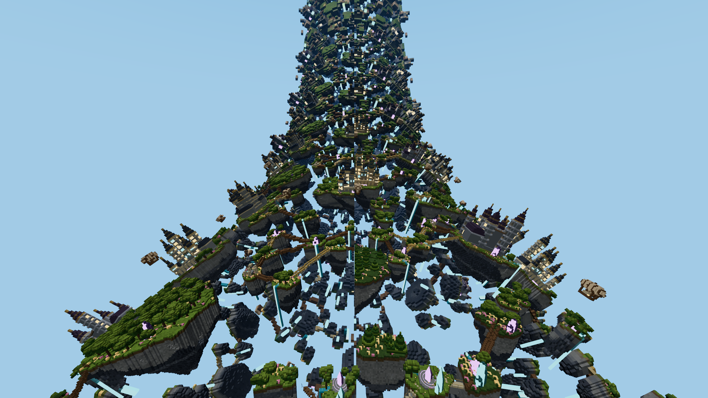

2026-11-05 · Chrome 156 · Apple / metal-3 · 2560 × 1440 framebuffer (1280 × 720 CSS, DPR 2) · medium lighting · shadows off
Decision: texture baking remains off by default. Keep ordinary geometry LOD. The best optional bake preset is 8 m / one texel per LOD cell / 384 m start distance / 32 MiB / nearest filtering. Savings are scene-dependent and do not establish a general frame-rate improvement on this machine.
Firefox follow-up: 84 additional blocks, same defaults, measured FPS differences and identical-code controls. Copper loses about 8% FPS with baking; the default remains Off.
Same source LOD, face budget, camera, render resolution and lighting. Counts are settled resident faces, not submitted triangles or FPS. GPU geometry pages can remain partly empty after merging.
| World | 8 m: fewer resident faces | 16 m: fewer resident faces | 8 m: net extra GPU storage | 8 m: changed near-view pixels > 2/255 |
|---|---|---|---|---|
| aether-archipelago | 7.1% | 8.7% | 27.5 MiB | 0.2830% |
| nature | 8.0% | 14.3% | 36.5 MiB | 0.0161% |
| copper-metropolis | 8.6% | 12.8% | 32.0 MiB | 0.0015% |
The texture pool additionally retains a 32 MiB CPU backing array. Original/reference images before and after each main run match pixel-for-pixel. Differences include curved interpolation and silhouette changes, so the bake is not visually lossless. Pixel percentages are over the whole framebuffer, not only terrain pixels.
Aether, after a 30-second excluded warmup: off → 8 m → 16 m → 16 m → 8 m → off. Each block has 1.5 seconds of warmup and 6 seconds of ordinary game frames. Values below average the two blocks per mode. GPU spans measure the frame pass envelope, not GPU busy time.
| Mode | Horizon GPU | Turning GPU | Ordinary frame rate |
|---|---|---|---|
| off | 3.544 ms | 3.427 ms | 120.0 FPS |
| edge8 | 3.328 ms | 3.237 ms | 120.0 FPS |
| edge16 | 3.601 ms | 3.532 ms | 120.0 FPS |
The 8 m candidate improves the paired horizon/turn GPU spans by about 6%/5.5%, but all modes are near the 120 Hz presentation ceiling. The broad matrix contains GPU clock/timing drift and mixed results across views; do not interpret its isolated small differences as reliable speedups. No claim is made for other GPUs, mobile browsers, high/ultra lighting, shadows, network loading or cold start.
| Control | Default | Range |
|---|---|---|
| Baked Distant Surfaces | Off | Off / On |
| Baked Surface Size | 8 m | 8 / 16 m |
| Baked Texture Detail | 1 texel per selected LOD cell | 1 / 2 |
| Texture Baking Distance | 384 m | 384–2048 m |
| Baked Texture Cache | 32 MiB | 8–64 MiB |
| Baked Texture Filtering | Sharp (nearest) | Sharp / Smooth |
Controls are under Global Settings → Graphics → Distant Terrain LOD. Changes persist; Reset Recommended restores this preset. Existing personal LOD settings are retained. The UI toggle and 8 → 16 → 8 m slider change were tested in the browser, then restored to Off without resetting the user's other settings.
The experiment varied 8/16 m patches, 1/2 texels per cell and nearest/linear filtering. The 384 m gate and 32 MiB pool were held constant, not proven globally optimal. Double density duplicates the existing LOD color samples; it does not recover finer source detail and can reduce atlas fit. The 8 m preset limits curved-surface error more conservatively than 16 m.
The worker merges coplanar occupied colored faces while retaining holes and emission partitions. A 256 × 256 RGBA8 atlas layer stores each accepted tile; one replicated border texel supports level-zero bilinear filtering. No automatic mip chain is generated because it would blend neighboring atlas charts. Existing geometric/color LOD still selects the source resolution. This is color baking, not a view-dependent impostor or a normal/depth bake.
A candidate must reduce its tile face count by at least 20% and fit one atlas. Otherwise it retains the original geometry. Cache pressure also retains original geometry. Original and baked arena pages use separate shaders; unchanged array layers are not uploaded again. Texture leases survive fades, arena migration and terrain replacement, then release explicitly.
66 accepted timed blocks · 47,512 ordinary frames · 7,967 GPU-timed frames · zero WebGPU validation errors. Each configuration waits for complete source generation and eight seconds without new source uploads/publications. Every accepted timed block has zero pending terrain frames.
114 relevant tests passed, including six-direction color/coverage/emission reconstruction, coarse texel density, worker and synchronous publication, rapid configuration changes, atlas lifetimes, pool exhaustion, arena maps, incremental GPU uploads, persistence and settings normalization. Engine/client type checks and production build passed, including exclusion of DEV entry points and production module/worker checks. The full repository English check fails on existing native-space documents/test strings, which this work did not modify.
Start node client/tools/texture-bake-receiver.mjs and the Vite dev server. Open client/tools/texture-bake-browser.html through Vite's /@fs/ route. Use ?world=aether-archipelago, ?world=nature or ?world=copper-metropolis; add &repeat=1 for the paired horizon/turn run. Keep the full 1280 × 810 fixture visible. Analyze a capture with python3 client/tools/analyze-texture-bake.py CAPTURE_DIRECTORY (Pillow and NumPy).
Machine-readable decision and validation record. Early probes and the initial run without the source-stability guard are excluded from the decision.
Same settled world and camera. Images are renderer captures outside timed blocks.
